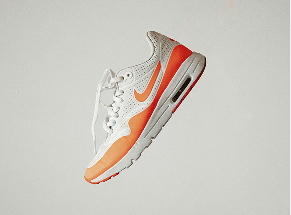
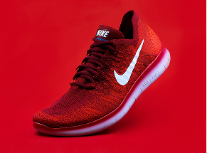
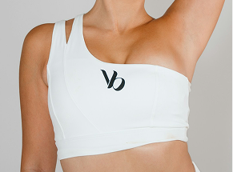
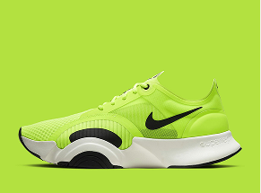
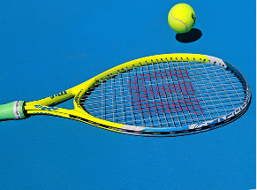
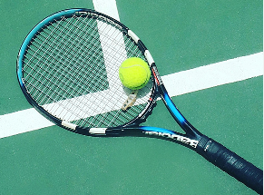
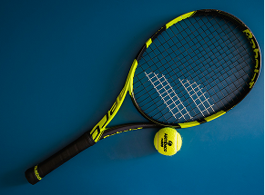
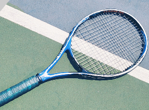

Chaussure de course légère au design moderne blanc et orange, offrant un bon amorti pour l'entraînement quotidien.
149,99$

Chaussure de course Nike rouge au tissu respirant, conçue pour le confort et la performance lors des entraînements.
119,99$

Brassière de sport blanche à coupe asymétrique élégante, alliant maintien et style pour les activités sportives.
79,99$

Chaussure d'entraînement vert lime au design audacieux, offrant stabilité et amorti pour les séances de sport intensives.
189,99$

Raquette de tennis légère et performante, conçue pour offrir un excellent contrôle et une bonne puissance de frappe sur le court.
179,99 $

Raquette de tennis au design sportif, avec un cadre noir et bleu, un tamis de taille standard et un manche gainé d’un grip foncé, adaptée à la pratique loisir ou intermédiaire.
129,99$

Raquette de tennis moderne de couleur noir et jaune, conçue pour offrir un bon compromis entre puissance, contrôle et maniabilité.
249,99$

raquette de tennis de la marque Wilson, arborant un design entièrement bleu métallique caractéristique de la gamme Ultra
209,99$